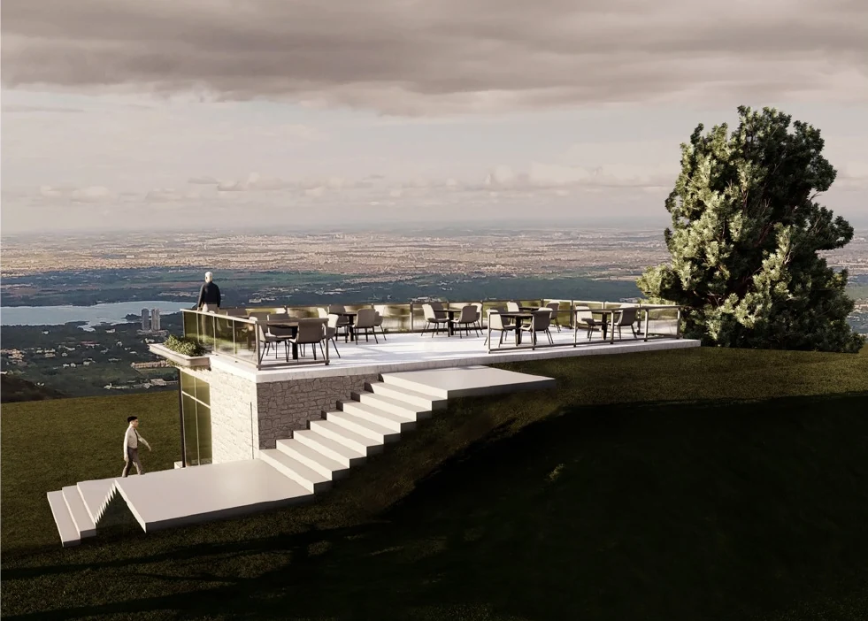

Professional work · Hospitality
Café at Hillpark
Set into a hillside above Islamabad, the café uses a low canopy to shelter visitors and frame the view across the city.

- Location
- Islamabad, Pakistan
- Practice
- Dar Architects
- Role
- Project architect · Phases 3–5
The drawing
The section shows the enclosed rooms embedded in the slope and the canopy extending beyond them.
 Enlarge drawing
Enlarge drawing
The space
The terrace makes the view part of the visit, with the canopy and stair following the contours of the site.
